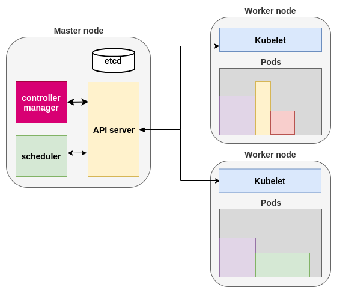
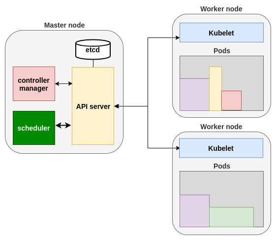
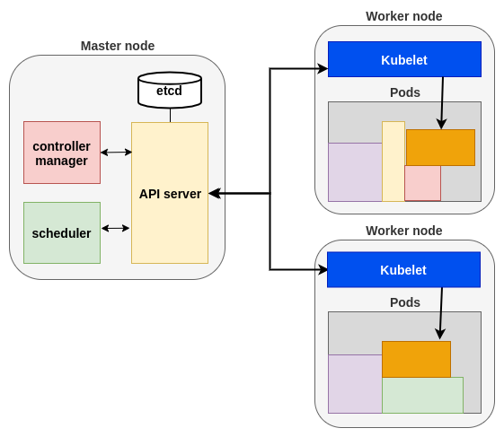

Une API pour les gouverner tous
→ Kubernetes peut devenir un prérequis pour tout développeur (cf. Docker...)
CRI : Container Runtime Interface
Dév : J'aimerais que mon application soit déployée en 2 instances.
Le controller manager est alerté, il crée et persiste les définitions de pods pour l'application.
Le scheduler voit que des pods sont en attente. Il cherche un worker pour chacun et persiste l'information.
Chaque kubelet concerné est alerté et exécute son container runtime pour déployer le(s) pod(s).
Du coup, on se monte un petit cluster ?
Services managés cloud :
$ kubectl run nginx --image nginx
$ kubectl create deployment nginx --image=nginx
kubectl scale|annotate|edit|patch ...
$ kubectl create -f config.yaml
$ kubectl replace -f config.yaml
$ kubectl apply -f config.yaml
$ kubectl apply -Rf my_config_folder/
On décrit l'état désiré ; Kube fait le reste !